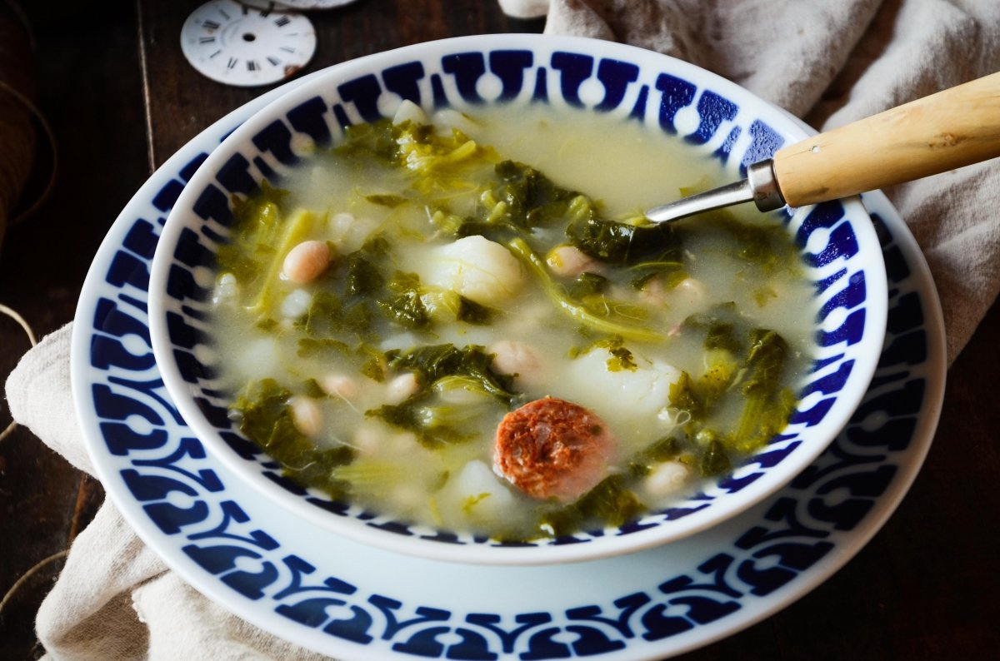

Caldo

The caldo is a traditional galician dish. Caldo is a spanish word that basically means
broth/stock but this dish is more like a thick soup or a potage. It is typically prepared during the Winter
and cold days.
The caldo is one of the most famous galician dishes of all times. This dish constituted an important
part of the galician farmer families diet. The bases of the caldo are the vegetables, but the recipe
usually depended on what the family had available in its pantry. So, during the good times, it often
included different pieces of meat that had been preserved in salt.
There are a lot of varieties of caldo! Depending on the time of the year and the geography,
some of its ingredients can change. Here, we will describe the recipe of the popularly called
caldo verde or caldo de grelo.
Despite its simplicity and humble origins, its flavour will captivate you!
Description
The amounts are given for 6 person.
- Dried white beans - 200g
- A piece of veal - 300g
- Fist sized potatoes - 4 units
- Turnip greens (grelos) - 300g
- Curated pork fat (unto) - 50g
- Galician chorizo - 1 unit
- Salt preserved pork pieces - 500g
Steps
- First things first; wash your hands!
-
Put the white beans in a recipient with cold water with a pinch of salt and let them soaking
for at least 12 hours. You can do this the night before.
-
Heat a big cooking pot with 5 liters of water. Add the white beans, the curated pork
fat, the chorizo and the rest of the meat. Let it cook over medium heat for an hour
. Remove the impurities from time to time.
-
Peel the potatoes and cut them in dices of approximately 3x3 cm. Add them to the pot and let them cook
for another 10 minutes. Once they are cooked, remove the meat and the
chorizo from the pot and reserve it.
-
Then, rinse the turnip greens and chop them in big pieces. Add them to the pot and let it cook for
20 minutes more. Check if the broth is salty enough, if it is not, add more
salt but be cautious.
-
Cut the meat and the chorizo in smaller pieces and add it back to the pot. Stir
to mix all the ingredients.
-
The caldo is ready to taste! Have in mind that this amount of caldo is
for several days and that, after the second day it will taste even better since all
the flavors will be enhanced!
If you are willing to take the caldo as a real galician, you can serve it in a cunca (traditional bowl) and
accompany it with the salty version of the filloas!
Back to index